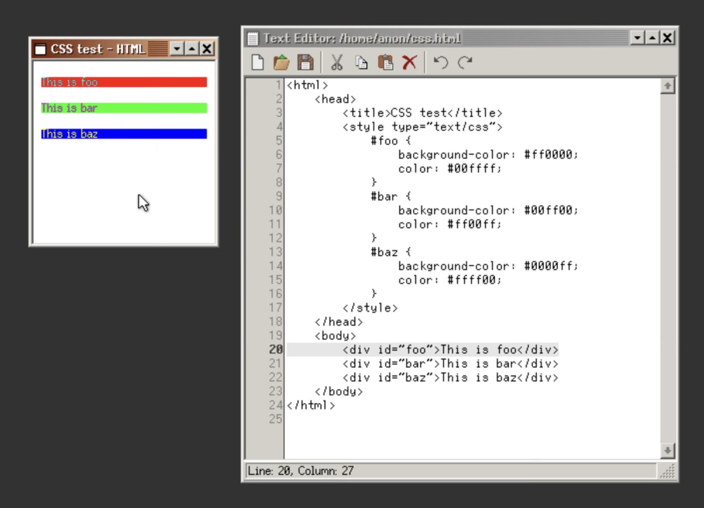
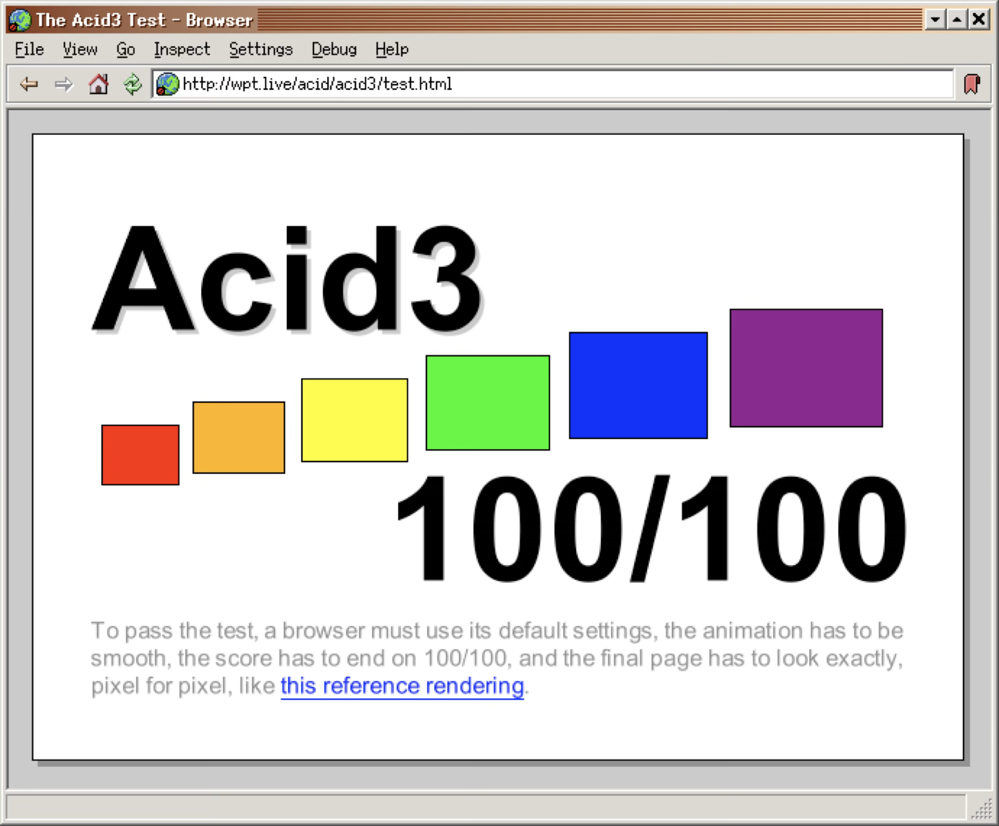
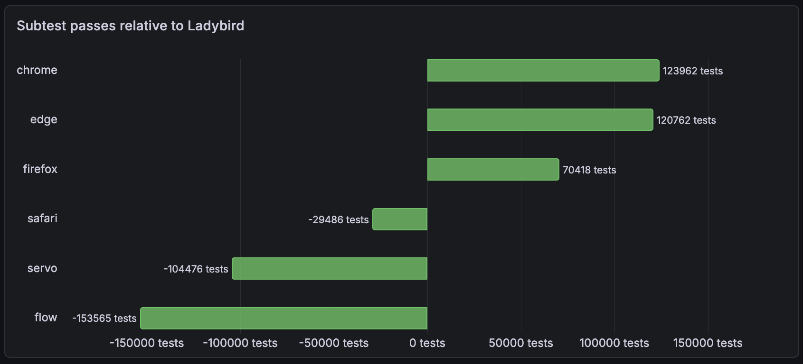
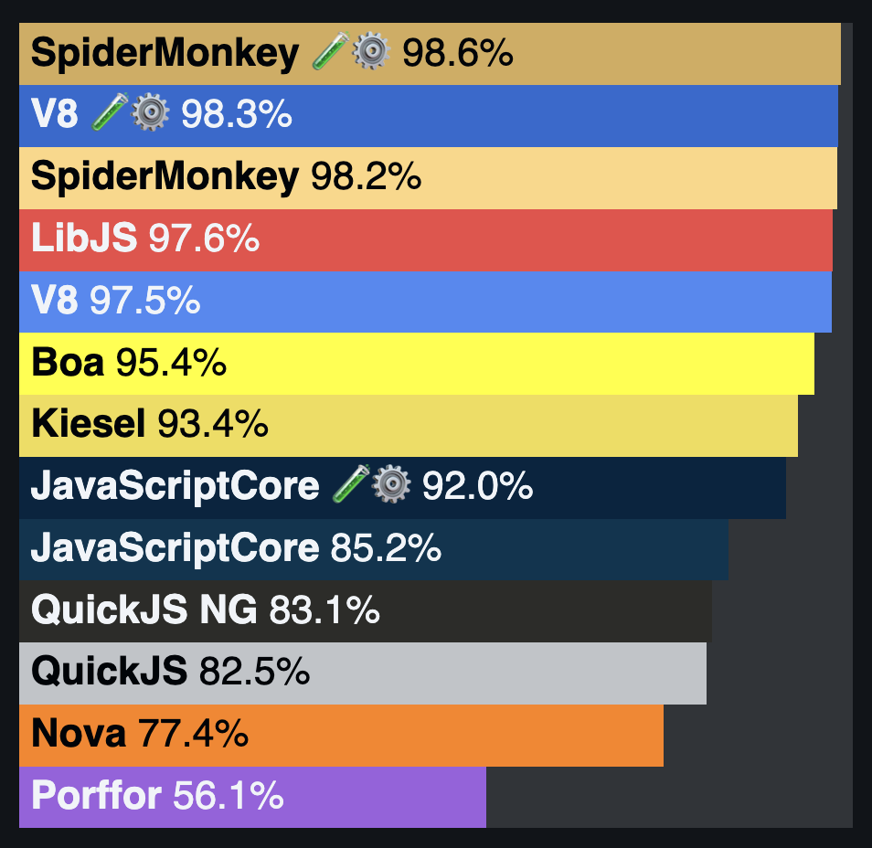

CSS, From Text to Pixels in Ladybird
A tour through the machinery that turns CSS values into something a browser can use.
A tour through the machinery that turns CSS values into something a browser can use.
COO of the Ladybird Browser Initiative, a 501(c)(3) non-profit based in San Francisco.
Building a new browser with a team of amazing people.





Scores measured June 10, 2026.
User-facing
Windows, tabs, address bar, input, platform frontend
Embeds web content and talks to sandboxed processes
Web platform
LibWeb, DOM, CSS, JavaScript, style, layout, paint
Sandboxed processes
Network loading
Image decoding
Worker execution
Async scrolling and composition
Elements, attributes, tree mutation
Tokens become rules, selectors, and values
Matches selectors, cascades, defaults, computes
Boxes become sizes and positions
Display commands are generated
CSSOM reads and mutations enter the same machinery
Editing, Fetch, IndexedDB, HTML, Web IDL, Storage, and more
RequestServer fetches HTML, CSS, images, scripts
HTML becomes DOM. CSS becomes CSSOM and style values
Selectors match. Values cascade, default, and compute
Boxes get sizes and positions
Layout boxes get paintable counterparts
Paintables record drawing commands
Output reaches the screen
width: 50%;
Simple enough, right?
.card {
width: 50%;
}If the property is unknown, the selector does not match, or the value is invalid, it does not enter the pipeline for this element.
// Libraries/LibWeb/CSS/Properties.json
"width": {
"animation-type": "by-computed-value",
"inherited": false,
"initial": "auto",
"requires-computation": "cascaded-value",
"valid-types": [
"length [0,∞]",
"percentage [0,∞]"
],
"valid-identifiers": [
"auto", "max-content", "min-content"
],
"needs-layout-for-getcomputedstyle": true
}Only recognized properties with values matching that property's syntax become declared values.
The grammar demo is calling into the same kind of question a browser has to answer before a value can become declared.
Demo API: CSS.supports(property, value)
// Libraries/LibWeb/CSS/CSS.cpp
bool supports(JS::VM&, Utf16FlyString const& property_name, StringView value)
{
if (auto property = PropertyNameAndID::from_name(property_name); property.has_value()) {
if (parse_css_value(Parser::ParsingParams {}, value, property->id()))
return true;
}
return false;
}There can be many declared values for one property. The cascade chooses at most one.
LibWeb applies declarations in cascade order. Later passes can replace earlier winners.
// Libraries/LibWeb/CSS/StyleComputer.cpp
// Normal author declarations, with inner contexts first so outer contexts win.
for (auto const& context : matching_rule_set.author_contexts.in_reverse()) {
for (auto const& layer : context.author_rules)
cascade_declarations(cascaded_properties, abstract_element, layer.rules, CascadeOrigin::Author, Important::No, layer.qualified_layer_name, false);
if (context.shadow_root == element_context_shadow_root)
cascade_inline_style(Important::No);
}
// Important author declarations, with outer contexts first so inner contexts win.
for (auto const& context : matching_rule_set.author_contexts) {
for (auto const& layer : context.author_rules.in_reverse())
cascade_declarations(cascaded_properties, abstract_element, layer.rules, CascadeOrigin::Author, Important::Yes, {}, false);
if (context.shadow_root == element_context_shadow_root)
cascade_inline_style(Important::Yes);
}
cascade_declarations(cascaded_properties, abstract_element, matching_rule_set.user_rules, CascadeOrigin::User, Important::Yes, {}, false);
cascade_declarations(cascaded_properties, abstract_element, matching_rule_set.user_agent_rules, CascadeOrigin::UserAgent, Important::Yes, {}, false);For width, the specified value is the cascaded value if one wins. Otherwise it is the initial value: auto.
// Libraries/LibWeb/CSS/StyleComputer.cpp
if (should_inherit && computed_properties_to_inherit_from) {
computed_style->set_property_inherited(property_id, ComputedProperties::Inherited::Yes);
value = computed_properties_to_inherit_from->property(
inherited_property_id,
ComputedProperties::WithAnimationsApplied::No);
requires_computation = property_requires_computation_with_inherited_value(property_id);
}
if (!value || value->is_initial() || value->is_unset()
|| (should_inherit && !computed_properties_to_inherit_from)) {
value = property_initial_value(property_id);
requires_computation = property_requires_computation_with_initial_value(property_id);
}They tell the browser which part of inheritance, initial values, or cascade history to consult.
For width: 50%, the computed value can still be 50%. For border-left-width: calc(0.8em + 2px), font-size is enough to compute pixels.
// Libraries/LibWeb/CSS/StyleComputer.cpp
auto const& absolutized_value = specified_value->absolutized(computation_context);
switch (property_id) {
case PropertyID::FontSize:
return compute_font_size(
absolutized_value,
get_property_specified_value(PropertyID::MathDepth)->as_integer().integer(),
inheritance_parent());
case PropertyID::LineHeight:
return compute_line_height(absolutized_value, computation_context.length_resolution_context.font_metrics.font_size);
default:
return absolutized_value;
}calc() and its available inputsChange font-size and the absolute part of calc(0.8em + 2px) changes with it. Percentages still need layout.
border-left-width: calc(0.8em + 2px)
For width: 50%, the containing block decides the used pixel value.
The same computed percentage can produce different used pixel widths.
The used value may still need output-environment adjustments: rounding, device pixels, font substitution, and similar constraints.
getComputedStyle() and resolved valuesFor compatibility, resolved values may expose computed values for some properties and used values for others.
getComputedStyle()resolved valueline-height: normal
normal stays normal
width: 50%
layout returns a pixel width
Some properties can be serialized from style. Others need a layout node or up-to-date layout before CSSOM can answer.
// Libraries/LibWeb/CSS/CSSStyleProperties.cpp
Layout::NodeWithStyle* layout_node = abstract_element.unsafe_layout_node();
bool const needs_layout = property_needs_layout_for_getcomputedstyle(property_id);
bool const needs_layout_node = property_needs_layout_node_for_resolved_value(property_id);
if (needs_layout || needs_layout_node) {
abstract_element.document().update_layout(DOM::UpdateLayoutReason::ResolvedCSSStyleDeclarationProperty);
layout_node = abstract_element.layout_node();
}
auto value = style_value_for_computed_property(*layout_node, property_id);
return StyleProperty {
.property_id = property_id,
.value = *value,
};width: 50%, stage by stagepadding-left, stage by stagecalc(50% - var(--gap)); theme: revert-layer
Declaredboth declarations parse and apply
Cascadedlater layer wins: revert-layer
Specifiedrollback exposes base value: calc(50% - var(--gap))
Computed--gap: 1.5em, font-size 16px -> calc(50% - 24px)
Used333px containing block -> 166.5px - 24px = 142.5px
Actualpaint may snap to device pixels, e.g. 143px at DPR 1
width: 50%Needs containing-block geometry
calc(0.8em + 2px)Needs computed font metrics
color: currentColorNeeds another property
var(--x)Needs cascade and substitution
.box {
--space: 2em;
padding: var(--space);
}The custom property cascades first. Substitution happens later, when the browser finally knows where the value is being used.
StyleProperty lists
Only what authors wrote
Only properties with candidates
Every longhand gets an answer
Sizes, boxes, paintables
Inherited variables without full copies
The cascade stores only properties that have declarations to compare
Computed style is indexed by longhand property ID
Custom properties form inherited parent chains
The temporary cascade object does not need to live with the page
// Libraries/LibWeb/CSS/CascadedProperties.h
HashMap<PropertyID, Vector<Entry>> m_properties;
AK::FixedBitmap<to_underlying(last_longhand_property_id) + 1>
m_contained_properties_cache { false };
// Libraries/LibWeb/CSS/ComputedProperties.h
Array<RefPtr<StyleValue const>, number_of_longhand_properties>
m_property_values;
Array<u8, ceil_div(number_of_longhand_properties, 8uz)>
m_property_inherited {};font-sizehtml { font-size: medium; }
body { font-size: 200%; }
main { font-size: 2em; }
article { font-family: monospace; }16px -> 32px -> 64px
13px -> 26px -> 52px
A later font-family result changes how earlier inherited font-size values are interpreted.
// Libraries/LibWeb/CSS/StyleComputer.cpp
auto font_family_value =
cascaded_properties.property(CSS::PropertyID::FontFamily);
if (!font_family_value || !is_monospace(*font_family_value))
return nullptr;
for (auto& ancestor : ancestors.in_reverse()) {
auto font_size_value = ancestor.computed_properties()->raw_cascaded_font_size();
if (auto absolute_size = keyword_to_absolute_size(font_size_value->to_keyword()); absolute_size.has_value())
current_size_in_px = absolute_size_mapping(absolute_size.value(), default_monospace_font_size_in_px);
if (font_size_value->is_percentage())
current_size_in_px = font_size_value->as_percentage().percentage().as_fraction() * current_size_in_px;
}Parser::Declaration and StyleProperty
CascadedProperties tracks winners and sources
StyleComputer applies inheritance, initial values, CSS-wide keywords
ComputedProperties stores computed longhand StyleValues
Layout resolves percentages, constraints, and geometry
Painting and compositing turn style into device output
StyleComputerThe real function handles logical properties, inheritance, animations, viewport units, custom properties, and more.
// Libraries/LibWeb/CSS/StyleComputer.cpp
auto device_pixels_per_css_pixel =
m_document->page().client().device_pixels_per_css_pixel();
for (auto const& property_id : property_computation_order()) {
auto const& computation_context =
get_computation_context_for_property(property_id, style, abstract_element);
auto const& specified_value =
style.property(property_id, ComputedProperties::WithAnimationsApplied::No);
auto const& computed_value =
compute_value_of_property(
property_id,
specified_value,
get_property_specified_value,
computation_context,
device_pixels_per_css_pixel);
style.set_property_without_modifying_flags(property_id, computed_value);
}@container and the page treeThe rule parses early, but matching it for an element depends on an eligible ancestor, its computed container-type, writing mode, and measured container features.
@container card (inline-size > 40rem) {
.title { font-size: 2rem; }
}// Libraries/LibWeb/CSS/ContainerQuery.cpp
for (auto const* container = element.element().flat_tree_parent_element();
container;
container = container->flat_tree_parent_element()) {
if (!container_name_matches(*container, container_name))
continue;
if (!container_satisfies_requirements(*container, m_feature_requirements))
continue;
return m_condition->evaluate({
.document = &element.document(),
.query_container = container,
});
}
return MatchResult::Unknown;A stylesheet is not just read. It is parsed, filtered, cascaded, defaulted, computed, laid out, painted, and exposed back to JavaScript.
Brought to you today by Ladybird, a brand-new browser.